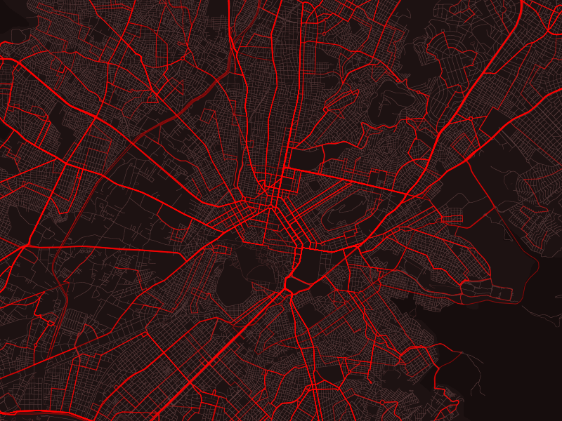
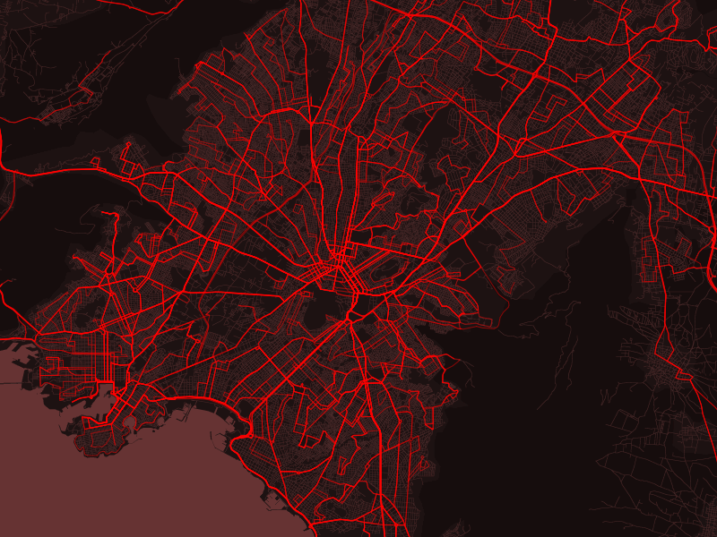

Central Athens bus network. Width of artery determined by schedule frequency. This is a data-driven painting - In general, I am interested in using programming as part of the painting process.
While creating zee.gr - a public transport app for Athens, Greece, I spent many months creating bus routes (lines and schedules) by hand. I believe I'm the first person to see the Athens public transport system in it's entirety.
